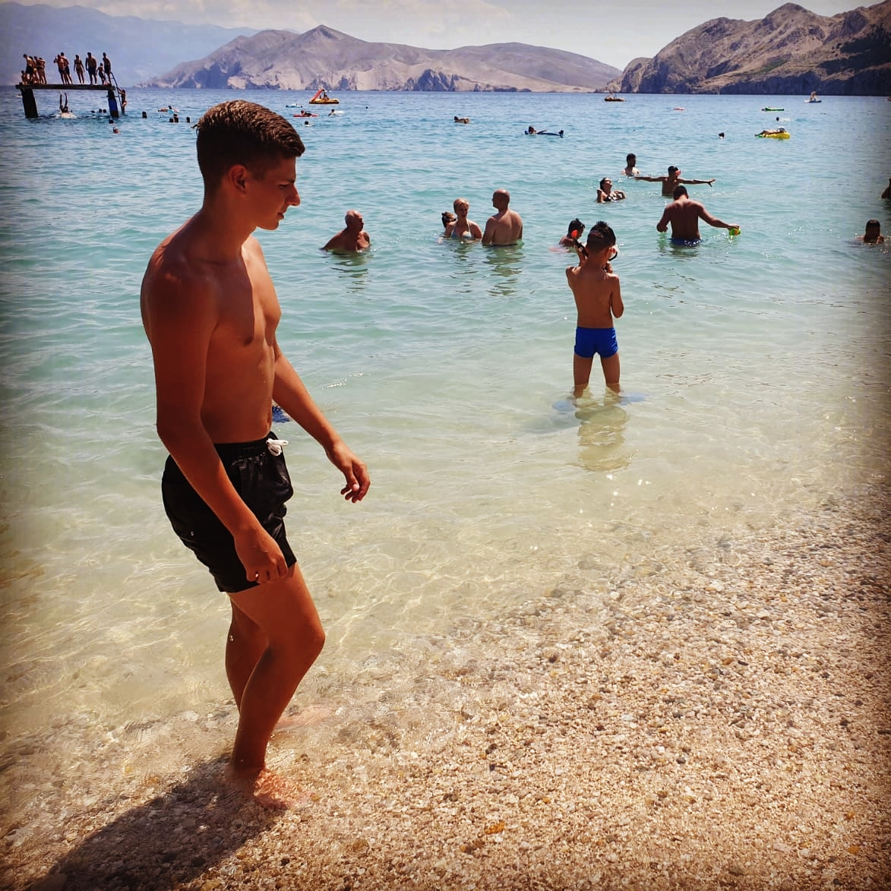

Das bin ich!
Jakov Gudelj

Ich heiße Jakov Gudelj und bin 19 Jahre alt.
Ich studiere Medieninformatik im 2.Semester an der Hochschule Furtwangen.
Ich spiele sehr gerne Fussball.
Hier noch ein Video aus der 7.ten Klasse.